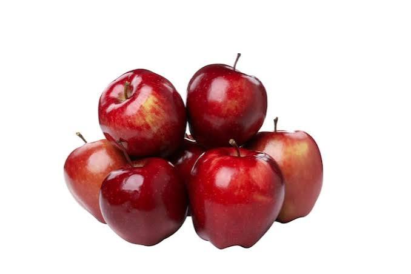
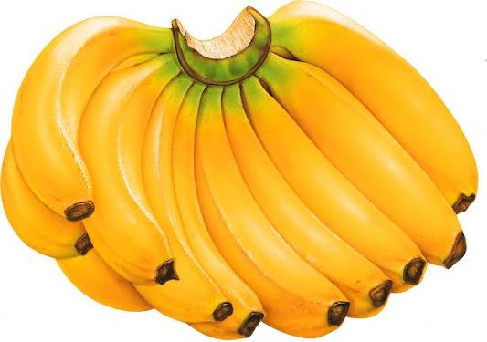
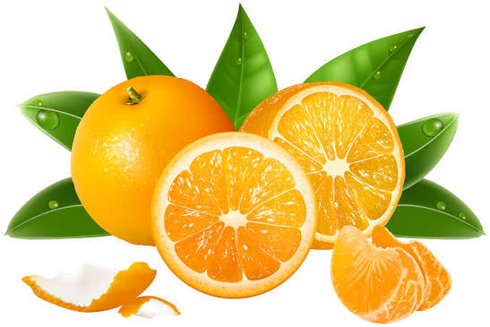
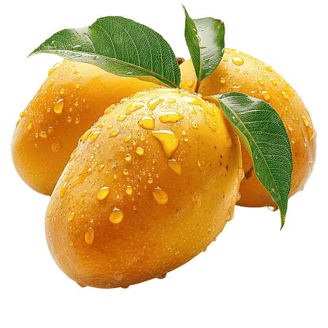

Apples are a popular fruit known for their sweet taste and crisp texture. They come in various colors, including red, green, and yellow. Apples are rich in fiber and vitamin C, making them a healthy snack option.

Bananas are a popular tropical fruit known for their creamy texture and sweet taste. They are a good source of potassium and vitamin B6, making them a healthy snack option.

Oranges are a citrus fruit known for their juicy and tangy flavor. They are an excellent source of vitamin C and antioxidants, making them a great choice for boosting the immune system.

Mangos are a tropical fruit known for their sweet and aromatic flavor. They are a good source of vitamin C and beta-carotene, making them a healthy snack option.